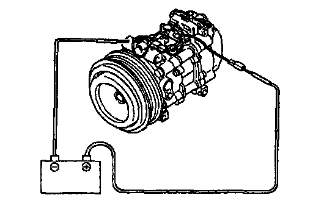

Compressor Clutch: Testing and Inspection
MAGNETIC CLUTCH INSPECTION1. Disconnect the magnetic clutch connector.


2. Connect battery positive voltage to terminal A of the magnetic clutch and ground to A/C compressor body.
3. Verity that the magnetic clutch operates.
4. If not as specified, replace the stator.